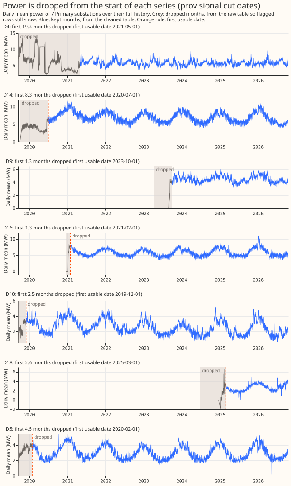
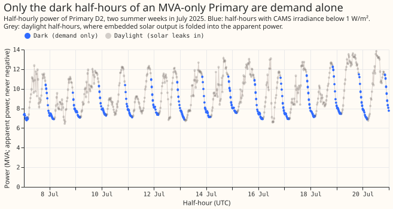
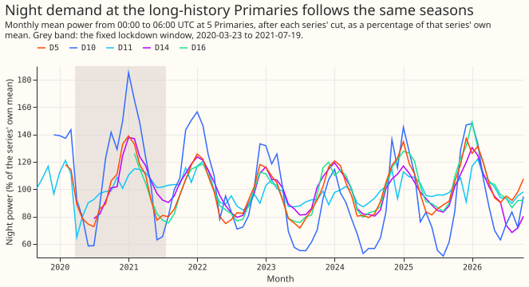

Data processing to apply in future experiments and production
The experiments so far show that the power readings, the switching log, and the embedded-solar capacity estimates all need processing before an XGBoost model trains or scores on them. This page lists each step as an instruction. Every entry says where the step applies (experiments, production, or both), links the experiments that are the evidence, and states the scope the evidence covers. An entry whose evidence is a first look at the data gives its confidence in words. A plan for an experiment begins by reading this page.
Terms used on this page
- D code: an anonymised series label, such as D4, used in the experiment write-ups (see experiment 51). The page also names a few substations (Stickney, Kirton, Wrangle T1, Wrangle T2, and Mount Bridge Boston) as the experiment write-ups name them. A D code and a substation name are different labels, and the page does not say which D code matches which name.
- Primary: a Primary substation, which steps 33 kV down to 11 kV. Sixteen of the 32 trial series are Primaries.
- Point of capacity: 1% of a series' capacity. Scores in points of capacity are smaller when the forecast is better.
- Season-year: a 12-month period running from September to August.
- Best guess: the project's current forecasting recipe, assembled in experiment 33.
- Skill: the percentage by which the best guess's quantile score is lower than the score of the
rule-based forecast
manual_heuristic. - Dark row: a half-hour in which the irradiance from the Copernicus Atmosphere Monitoring Service (CAMS) is below 1 W/m².
- Closure: a period in NGED's switching log in which an operator closed a switch that is normally open.
- Transfer: a switching operation that moves part of one Primary's demand onto neighbouring substations for hours or days. The Primary that loses the load is the donor substation, and the receiving load is the usual load of the substations that gain it.
- Labeller: a language model that reads the power readings and judges whether a transfer is visible, as in experiment 41.
- Residual panel: the stored table of residuals, each the measured power minus the power an XGBoost model predicted.
- Error correction: the 14-day correction that adds the forecast's recent errors to the next forecast.
- Abnormal running arrangement (ARA) and normal running arrangement (NRA): an ARA is a period in which an operator has closed a normally open switch, so that one Primary carries load that belongs to a neighbour. The NRA is the usual layout.
- Tail coverage at q95: the share of observed values that fall below the forecast's 95th percentile, which is 0.95 for a forecast with correct tails.
- Curtailment cost: the avoidable cost, in pounds, of a forecast's errors when a node is held to a limit (experiment 84).
Series and units
Count 32 time series in version 1 of the trial area. They are 16 Primary substations, 6 solar farms, 3 wind farms, 2 grid supply points, 2 bulk supply points, and 3 other generators or storage units, as the home page lists. Applies to experiments and production.
Read each series' unit from the units column of the metadata table, and treat the Primaries
metered in MVA as a different kind of series. A series is metered in MW (signed active power) or
in MVA (apparent power, which is never negative). Eight of the 16 trial Primaries are metered only
in MVA. Applies to experiments and production. Evidence: experiment
79 found no reverse flow at 7 of the 8 MVA-only
Primaries from April to September, and experiment
56 could not tell the best guess's
skill at the 8 MVA-only Primaries from its skill at the 8 MW Primaries (inconclusive). Experiment
110 fitted a power
factor to only 2 of the 8 MVA-only Primaries (and recovered one of them, D12), because the other 6
have almost no reverse flow in
their training rows. It held the power factor at 0.97 at those 6, and modelling the meter as
apparent power scored 0.13 points of capacity better than reading it as real power. Experiment
204 summed the apparent-power children
of two bulk supply points into the bulk supply point's reading: reading the magnitude as signed power
or converting it with a fitted sign scored within 0.03 points at one bulk supply point and 0.02 to
0.03 points better with the sign at the other, where Stickney (D12) has reverse flow. Provisional.
Read power through the cleaned table, and read the raw table only when the question is about
availability. The cleaned table holds only unflagged rows
(nged_data.storage.scan_cleaned_power). Applies to experiments and production. Evidence: the
data-cleaning roadmap page and experiment
6, which scores on cleaned power.
Count a series' history from its first unflagged row, which is later than its first row of any kind (high confidence). D9 starts in 2023-04 and its first unflagged row is in 2023-08. Only five Primaries hold long histories: D5, D10, and D11 start in 2019-09, D14 in 2019-10, and D16 in 2020-12. The late starters begin between 2023 and 2025. Applies to experiments. Evidence: experiment 103.
Trim the start of each series
Cut the first months of most demand series (high confidence for D4, D14, D9, D16, and D18, medium to low for the rest). The first 1 to 19 months of a series often sit far from the same months in later years. A new meter can read near zero for days to weeks and then step up, and a new site can commission in stages. Cut until the level, the daily shape, and the share of rows present match the same months in later years. Cut more when the match is uncertain, and let a later look move a cut later and never earlier. Applies to experiments, and to production for a series that has just started reporting. The cuts found so far cover 16 of the 20 series examined (experiment 103, figure 4):
| Series | Cut | Confidence | Reason |
|---|---|---|---|
| D4 | 19.4 months | High | Level 1.5 to 2 times too high, a stuck plateau, then too low, until a step on 2021-04-12 |
| D14 | 8.3 months | High | Level about half of later years until a step of 2.2 MW on 2020-06-15 |
| D17 | 5.6 months | Medium | Reads about 0, then 4 months of ramp and erratic swings |
| D5 | 4.5 months | Medium | Night level 15% to 30% low until a step on 2020-01-09 |
| D3 | 3.5 months | High | Night level 30% to 50% low and 15% to 60% of half-hours missing |
| D18 | 2.6 months | High | Zeros, then a level near 0 to 1.5 MW with negative rows, then erratic |
| D1, D10, D21 | 2.5 months | Medium | D1 unusually smooth then volatile; D10 and D21 have 30% to 70% of half-hours missing |
| D22 | 1.5 months | Low | Gaps in most days and a night step |
| D9, D16 | 1.3 months | High | Near zero, then a staged switch-on |
| D13, D19 | 0.9 months | Low | Level steps in the first weeks |
| D15 | 0.8 months | Medium | Erratic for 2 weeks while the meter was commissioned |
| D12 | 7.4 months | Low | Night level 1.5 to 2 times later years; the start-of-series review recommends no cut, and the 15-point rule cuts it |

Figure 1 shows the dropped months sitting far from the kept months at D4, D14, D9, D16, and D18. The figure draws 7 Primaries, and the cut dates come from the start-of-series review that experiment 103 confirmed. The grey dropped months are read from the raw power table, because the cleaned table removes flagged rows and the early months are often flagged. The blue kept months are read from the cleaned table. At D10 and D5 the dropped months look less different from the kept months, which fits their medium confidence.
An uncut start hurts a model without recent power far more than a model with it (high confidence for D18). In experiment 102, D18's training rows began with a late start at zero output. A weekly-refitted XGBoost model without the three recent-power inputs forecast 20% of capacity in December 2025 against an actual of 75%, and its score at D18 was 5.7 points of capacity worse than the same model with the inputs. With the start cut (training from a later date), the difference at D18 fell to -0.03 points. The cost of removing the inputs across the 16 Primaries fell from 0.710 to 0.361 points. Applies to experiments, and to any comparison of a model with and without recent power. A comparison that cuts the start for one arm must cut it for every arm.
Decide which rows are demand
Use a Primary metered in MVA for demand only on dark rows (high confidence). An MVA reading cannot show reverse flow, so the solar output behind the Primary reads as demand in daylight. A filter that keeps rows with irradiance below 100 W/m² still keeps rows with solar output, because the filter admits irradiance above 1 W/m². After the start cuts, the dark rows leave 2.4 to 3.3 site-years per MVA Primary with the 2020 lockdown kept, 2.3 to 2.7 with the fixed lockdown window removed, and 0.9 to 1.0 in 2023-07 to 2025-06. Applies to experiments. Evidence: experiment 103.

Figure 2 shows that the daylight half-hours at an MVA-only Primary carry a solar dip that the dark half-hours lack. The grey daylight half-hours sit in the middle of each day, where embedded solar output reduces the net flow and the apparent power cannot show its sign. The blue dark half-hours form the smooth evening and night curve that holds demand alone. The figure draws one Primary (D2) for two weeks of July 2025.
Do not treat grid supply points or bulk supply points as clean demand (high confidence). The grid supply points are dominated by generation: D1 is below 5 points of capacity on 75% of nights. The bulk supply points sum the trial Primaries: D17 reverses flow on 51% of May to August days at midday. Applies to experiments. Evidence: experiment 103.
Screen for embedded generation with the share of negative dark half-hours (high confidence). Series with 26% to 82% of their dark half-hours negative carry embedded generation or an exporting grid connection. The screen cannot work on an MVA Primary. Applies to experiments. Evidence: experiment 103, figure 9.
Count the half-hours that substation_zero flags before scoring a detector on a transfer.
(Provisional.) The rule flags a reading of exactly 0 at a Primary substation, and a transformer
that was switched out read exactly 0 in the 5 transfers we checked. At the series P12 and P13, the
two transformers of one Primary substation, the rule flagged 426 half-hours inside 5 of the 6
labelled real transfers lasting more than 1 day, and the panel of residuals used to score
detectors held no readings there. The cleaned power table keeps flagged rows with their original
readings, and restoring those half-hours let the refit-offset neighbour-count detector (RO-NC)
find 4 of the 6 transfers. This applies to
experiments on switching. For production, the maintainer has to decide whether the rule should keep
a zero reading when the other transformer of the same Primary substation carries the load of the
switched-out transformer. Evidence: experiment
132. Confidence: medium, from 5
transfers at one Primary substation.
Unlabelled jumps
Before reading flow on two substations with no interconnection (a placebo pair) as a fault of a method, check whether either substation has unlabelled jumps (low confidence). In experiment 131's replicate year (2024-25), the edge-flow fit with a drift term put 4.27 MW-days a year on D16 and D10. Of those, 1.58 lie inside the two D10 windows described under "Expect D10 to carry unlabelled jumps" below. Applies to experiments. Evidence: experiment 131.
Do not train a learned load-shift score with every real candidate as a negative and then score it on the months it trained on (medium confidence). Real load shifts that start in the training months are then taught as negatives: the score trained that way found 0 of the 15 logged load shifts that start in training months, against 7 for the same score with logged and labelled spans removed from its negatives. In the 20 load shifts that start in other months both found 13 (post hoc, experiment 302). Applies to experiments; provisional.
Fixed windows
Use the fixed lockdown window, 2020-03-23 to 2021-07-19, and do not detect the window from the data. Experiment 6 defines its indicator with these dates, and the indicator lowered the error by 0.26 points of capacity on the selection fold. A window found from the data picks up drift and solar growth as well (experiment 103, figure 12; medium confidence): a drift-removed fit finds April 2020 more than 5 points low only at D11 (-26 points) and D10 (-7 points), and August 2020 to September 2021 sits 5 to 17 points above the fit at D5, D10, D11, and D14. Applies to experiments and production.
A dataset of dated events that ends before 2021-07-20 cannot be compared with the demand-model fit's training rows, because the lockdown window removes every earlier row from training. The feed-in tariff register, a list of small solar installations, ends on 2021-03-24, so none of its dates falls in a month on which the fit trains (experiment 215). Applies to experiments.
Check how many days of training rows a demand-model fit kept after the lockdown window is removed, and flag a fit with fewer than 180 days (provisional; medium confidence). Leaving the lockdown window out of training left Christmas 2020-21 fits with 51 to 143 days of rows. Every substation's Christmas 2021-22 fit had the same 104 summer days and no winter, and D9's 2023-24 fit had 31 days. The fits with under 180 days scored 1.38 to 1.91 times their ordinary-weekday error pooled over substations at Christmas, and D9 alone scored 5.6 times, where fits with at least 180 days scored 0.97 to 1.22 times (experiment 173; the 180-day threshold was chosen after the scores were read, and thresholds of 90 and 270 days gave the same picture for 2022-23 onwards). The Kalman filter and recipe R in that experiment do not repair a fit that saw little or no winter. Applies to experiments and production.
Give the series that changed regime an individual start date or a flag (medium confidence). D8 weekday daytime demand falls from about 9 MW to about 3 MW between 2023-10 and 2025. D12 switches between a high-night and a low-night regime. D18 steps up about 1.1 MW at night around 2026-07-03 (a date after the experiment's window, not rechecked there), and D5 shows a flat midday floor since 2022. Month-mean steps of over three monthly standard deviations occur at D6 (a drop of 218 MW in 2023-07) and D11 (2020-04). Applies to experiments. Evidence: experiment 103 for the step list and D8.
Treat D8's reading as including one gas engine's output until 2023-08-15, and as excluding it afterwards (provisional, medium confidence). The engine connected on 2023-06-13 and its own readings carry output from 2023-07-03. While those readings arrived, D8's residual rose by 0.02 MW per MW of engine output, where a reading without the output would fall by 1 MW per MW.
D8's share of half-hours with a residual below -2.5 MW then stepped from 0.010 to 0.257 in the week of 2023-08-14 and stayed between 0.10 and 0.46 in every month to January 2026. The share fell from 0.292 in January 2026 to 0.070 in March and 0.008 in April, with no matching change in the engine's own readings, so whether the engine is visible in D8 from 2026 is unknown. Applies to experiments; whether it applies to production awaits NGED's answer. Evidence: experiment 194.
Give a forecast the engine state it will have at forecast time, and train the engine term on that same lagged state (provisional, medium confidence). Applies to: experiments. D8's engine detector gives a state for each half-hour that is built from that half-hour's own reading. A coefficient fitted on that contemporaneous state is 3.6 MW per half-hour with one or more units running, but the state of the last settled day is worth 0.15 MW (interval -0.06 to 0.32) out of sample, so applying the contemporaneous coefficient to the lagged state makes the quantile score 10% worse. Trained on the lagged state, the coefficient is 0.9 to 1.0 MW and the score is 3% better than a model without the term (experiment 294).
Do not fit calendar and seasonal terms exactly (by variable projection, which solves the linear coefficients exactly at each step) to a window of three months or shorter. An exact least-squares fit of a per-substation model with holiday, tent, harmonic, and profile terms to 4 weeks or 3 months of data extrapolates those terms badly: the per-site fits scored 70.6 and 48.4 points at the five decision substations, against 15.1 and 5.5 for the gradient fits that stop before convergence. No window between 3 months and 2 years was tested. The pooled model with its interaction network failed the same way on four days of the scored year, where an exact fit with weak penalties forecast up to 280 points too high (experiment 112; medium confidence; provisional). Applies to experiments.
Treat a heating threshold above a substation's highest temperature, and any per-site threshold of a pooled model, as unidentified. Above the highest temperature the heating hinge is always on, and the deviation absorbs a shift, so only the prior sets the threshold; at real noise (standard deviation 5 points) a synthetic fleet with a 14 degree threshold was recovered to 2.7 to 5.7 degrees with the interaction network off or on (experiment 112; medium confidence; provisional). Applies to experiments.
Drift in demand over the years
Do not assume that one level shift removes drift, because drift differs by series and by hour band. In 12 of 13 series some band moves by at least 1 point of capacity a year. From April to September the pooled slope is -1.30 points a year at midday (95% interval -2.32 to -0.92), -0.88 in the evening, and +0.69 at night. The all-hours slope is +0.04 because series drift in both directions (experiment 92). Subtracting a trailing 365-day level removed 42% of the old training year's penalty only when the largest series was included, and none of the penalty without that series (experiment 93). Applies to experiments and production. Scope: 13 Primary series with at least 24 months of data.
Do not expect an older training year to become usable by matching its weather product. Changing the weather product from 18 km to 9 km grid spacing does not explain why an old training year scores worse than a recent one (experiment 95). Applies to experiments and production.
Allow for a demand drop shared across sites in season-year 2022 (medium confidence). Evening
demand fell by 7 to 10 points and night demand by 2 to 7 points of capacity at D10, D11, and D5
against season-year 2021, and recovered partly by 2025 at D5 and D11 but not at D10, probably after
the rise in energy prices. Evidence: experiment
103, the season-year means in report.txt. A
model trained across years can read the drop as a trend. Applies to experiments.
Expect monthly night demand to move together across the long-history Primaries, and expect the winter heating slope of night power not to drift (medium confidence). Winter heating slopes of night power show no detectable drift between the first and last winter at the long-history sites. Monthly levels move together across sites, with a mean pairwise correlation of 0.56 at night and 0.47 in the evening after the seasonal cycle is removed (experiment 103, figure 8). Applies to experiments, before pooling sites.

Figure 3 shows the same seasonal swing at all 5 long-history Primaries, with D10 swinging furthest. The grey band is the fixed lockdown window. The figure does not isolate the shared month-to-month level that the correlations above describe, because the seasonal cycle dominates the figure.
Centre the residual quantiles of a replica fit before adding them to a forecast's mean. The raw quantiles carry the replica year's mean bias, so adding them shifts every quantile of the scored year by that bias. In experiment 104 the shift moved the median forecast by -21.3 to +3.6 points at the six long-history Primaries and reversed the sign of two contrasts (all years against 12 months, and drift against no drift) (experiment 104, Correction). Applies to experiments and to production. Confidence: high, because the centred and uncentred sets differ only in this shift.
For the convex demand model, tie a joint fit through a level-tracking filter to the two-stage coefficients (provisional). In a fit that minimises the error after a Kalman filter that tracks a level, the filter absorbs a constant shift of each slow term (the weekly profile, the tent, and the harmonics), so the loss leaves those terms to the penalty alone. The untied joint fit's weekly profile moved by a median of 19 points of capacity (up to 95) when the training cut-off moved back by 7 days, against 1 point for the two-stage fit, and its quantile score at 12 to 36 hours was 5.4 points of capacity worse (experiment 135). A ridge tie to the two-stage coefficients cut the weekly-profile movement to 1 point and left the score within 0.013 points of the two-stage fit. Applies to experiments. Evidence: five decision substations, the scored year, one model family. Confidence: medium, because the explanation was not tested by a variant of the loss.
Give a capacity increment only to a season-year with enough training rows (provisional). A fit whose cut is 2024-07-01 includes the half-hour that ends exactly at the cut, which belongs to season-year 2024, so that season-year has only 2 rows at D5. A free capacity increment for those 2 rows reached -56 points in an unconstrained fit. The N5 scripts drop any season-year with fewer than 1,000 training rows from the capacity columns, so the rows count towards the previous season-year's capacity (experiment 113). Applies to experiments that fit the convex model's capacity. Evidence: D5 at the 2024-07-01 cut. Confidence: high.
Timestamps and availability
Treat ERA5 as available about 5 days after the event, so ERA5 at lag times is a ceiling and not an input that a live service can have. ERA5 is the European Centre for Medium-Range Weather Forecasts (ECMWF) estimate of past weather. Name the weather source used at lag times in every write-up. Applies to experiments. Evidence: experiment 37 and experiment 38 both state the delay and call their numbers retrospective.
Treat an ECMWF ensemble run as usable 9 hours after its init_time, and derive
power_fcst_init_time from the run. The constant NWP_PUBLICATION_DELAY_HOURS in
packages/ml_core/src/ml_core/features/_nwp.py is 9. A 00Z run reaches our disk at about 10:30 UTC,
which is 10.5 hours after its init_time, so the 9 hours is not the time the run arrives. The delay
is the earliest usable time of a slot: any delay above 6 hours and up to 12 hours selects the same
run at each of the four 6-hourly slots, and 9 hours gives each slot the run that a healthy ingest
has landed by that slot. Bulk-mode training uses the same constant to derive power_fcst_init_time,
so changing the constant changes the training features. A replay of a past init_time must apply
the delay, because joining a run that landed afterwards is lookahead bias. Applies to experiments
and production. Source: the constant's docstring in that file.
Join power and CAMS timestamps on (time - 1 µs).truncate("1h") + 1h (medium to high
confidence). A power timestamp marks the end of its half-hour, and a CAMS timestamp marks the end
of its hour. A naive join on equal timestamps drops or misassigns half the rows, and shifting the
join by 30 minutes earlier weakens the correlation between hourly power and irradiance by 0.04
(experiment 103, figure 10). Applies to
experiments and production.
Do not shift power timestamps: the time column of the cleaned power table marks the end of the
half-hour (high confidence that no 30-minute error exists). Power timestamps show no 30-minute
error on either side of NGED's fix of 2026-03-26 08:30 UTC, and the ingest's correction of the
earlier late stamps goes the right way by the right amount. The test used clear days and the change
in net power against a sun-height predictor at sunrise and sunset, with an offset search from -120
to +120 minutes and 95% intervals from resampling days, on the aggregate of the 6 metered solar
farms. Before the fix, the corrected stamps read 0.9 minutes late (series from -0.2 to +2.9), so the
raw feed was about 31 minutes late and the 30-minute ingest correction is right to within about 3
minutes. After the fix, from April to 2026-09-10, the median is +4.7 minutes (+1.5 to +13.3). The
same months before the fix read +2.0 (-3.3 to +5.4), so the two sides do not differ. Primaries
metered in MW are a weaker test, because demand ramps bias the fit: only D5 and D18 gave usable fits
(+7 to +18 minutes). A correlation-peak test on summer middays is uninformative, because the
correlation is flat near -0.18 with peaks at +/-60 to 90 minutes, so use sunrise and sunset ramps on
clear days (experiment 103, figure 13).
Applies to experiments and production. Scope: all power series, 2019 to 2026. The limits are that
the metered solar farms lie within one 25 km area, the side after the fix has under 50 clear days,
and the only known-answer check is the 30-minute sign test.
Assume a power reading reaches the forecast 3.5 hours after the half-hour it covers, and treat the number as an assumption. The recent-level filter of experiment 106 sees only the residuals whose half-hour ended at least 3.5 hours before the 09:00 UTC initialisation, the delay that experiments 87 and 104 use for lagged power (3 hours plus the half-hour a reading covers). No experiment has measured the delay of the live telemetry. Readings 0 hours old instead of 3.5 lowered the score by 0.035 points (95% interval -0.060 to -0.016). Readings 9 hours old raised it by 0.026 (0.000 to 0.046), and readings 24 hours old raised it by 0.099 (0.059 to 0.142), on five Primaries in the scored year. Experiment 115 repeated the sweep on ensemble weather at day D+1 (scored year, five Primaries, difference of mean scores without an interval): readings 0 hours old lowered the score by 0.016 points, readings 24 hours old raised it by 0.088, and readings 33 hours old raised it by 0.120. Applies to experiments and production. Provisional: the delay was not measured on live telemetry. Confidence: low for the delay, medium for the size of its effect.
When power readings are missing, let the Kalman filter coast and widen the quantile bands; do not fall back to the convex demand model with no correction (provisional, low to medium confidence). Coasting means running the Kalman filter, which estimates the recent error of the demand model's forecast, without feeding it new readings, so its short-lived error component decays and its slowly varying error component holds steady. After injected gaps of 3 to 72 hours, coasting scored 0.245 to 0.439 points of quantile score better (in percent of effective capacity, lower is better) than the demand model with no correction, over leads of 0.5 to 168 hours. Widening each quantile's offset from the mean by the filter's variance growth since the last reading reduced the share of readings below the predicted 5% quantile from 7.7% to 5.5% after a 24-hour gap (the target is 5%), without worsening the quantile score. The data could not show whether, after about 72 hours, it would be better to drop the filter but keep the winter night offset and recipe R. Applies to production. Evidence: experiment 205, at five Primary substations (up to 56 injected gaps each, made by hiding readings in clean data).
Weather products
Train each model on the history of the weather product that will serve it, and do not train on the Centre for Environmental Data Analysis (CEDA) archive of the Met Office's UKV forecast and then serve the live UKV. UKV is the Met Office's UK Variable-resolution forecast, on a 2 km grid. The CEDA archive and the live product are statistically different, and the archive is licensed for non-commercial use (experiment 53). Applies to experiments and production.
Calibrate the ECMWF ensemble's temperature and irradiance before it drives a model trained on ERA5 and CAMS, and expect shifts of up to about 2 K in temperature and 20% in irradiance (medium confidence). Per substation, season, lead band, and hour band, the ensemble-mean temperature needed a shift of -1.15 to +2.05 K (mean +0.20) and the daylight irradiance a ratio of 0.80 to 1.11 (mean 0.95) at five Primary substations, fitted on the odd months of 2024-07 to 2025-06. Shrinking the forecast solar anomaly towards CAMS's month-by-half-hour climatology did not help in any lead band (experiment 111). Applies to experiments, and to production if a model trained on past weather serves ensemble forecasts.
Drop an ensemble member that has a missing weather value from its run at that substation, and refuse a run whose control member is incomplete (medium confidence). Member 36 of the run of 2025-06-04 has 12 missing shortwave values at two Primaries, which would fail every half-hour of the run at those substations; the ensemble mixture then pools the remaining 50 members' forecasts (experiment 111). Applies to experiments and production.
Treat the ECMWF ensemble's shortwave radiation as a 6-hour mean after lead 144 hours. Applies to: experiments and production. "Lead" is the hours after the ensemble run's start time. The ensemble store's stamps are 3-hourly up to lead 144 hours and 6-hourly from lead 150 to 360 hours, and each downward shortwave value is a mean over the period that ends at the stamp. A pipeline that assumes 3-hour periods misplaces the daily peak after lead 144 hours (experiment 310). The evidence is a build for six solar farms in the trial area at leads of 12 to 252 hours. The confidence is moderate, and the entry is provisional until the experiment has had its reviews.
Drop observations that were not known at run time when building the manual_heuristic and
climatology references. Applies to: experiments and production. manual_heuristic takes the
quantiles of 13 earlier observed powers, 1 to 6 weeks and 49 to 55 weeks before the half-hour. When
the lead exceeds 7 days, the observation 1 week before the half-hour is not yet known at run time.
Drop that observation at those leads (experiment
310). The confidence is moderate, and the entry is
provisional until the experiment has had its reviews.
Do not assume the unit PV shape rises with irradiance at low sun. Applies to: experiments.
SunGeometry.pv_shape_and_ghi returned a unit PV shape that fell from 0.124 to 0.090 as
half-hourly irradiance rose from 150 to 227 W/m2 at an elevation of about 14 degrees, in a fake
ensemble that scaled the irradiance of one substation by 0.6 to 1.4. The response of the
T-all fit to member irradiance was therefore not monotone on 1.8% of the daylight rows with a
physical clear-sky index, all at elevations of 14 to 16 degrees
(experiment 184). The scored contrast did not
change when rows under 17 degrees were dropped. The confidence is moderate, and the entry is
provisional until the experiment has had its reviews.
Wind farms
Do not compute air density from the ECMWF ensemble's surface pressure for a model trained on ERA5 surface pressure (provisional, medium confidence). Applies to: experiments and production. The ensemble's surface pressure at the three metered wind farms is 0.7 to 7.0 hPa above ERA5's in the monthly mean (about +2.7 hPa on average, because the two products use different terrain heights), and a density column built from the ensemble pressure scored 0.049 points worse than temperature alone (95% interval 0.015 to 0.091). Evidence: experiment 256, three farms, July 2025 to June 2026.
Drop the rows in mask.parquet of experiment 210 before training or scoring on the three metered
wind farms, and do not expect ERA5 wind speed alone to find idle rows (provisional, medium
confidence). Applies to: experiments. The idle floor is a set of near-zero readings with
repeated values (W1 and W3 in MVA) or small negative readings (W2 in MW, down to -0.071 MW). At
ERA5 100 m wind of 5 to 8 m/s, 11% to 50% of half-hours are in the idle band, and a wind-speed
threshold that keeps false drops under 5% misses 51% to 69% of idle-band half-hours out of sample.
The mask adds runs of at least 12 hours in the idle band at high ERA5 wind (suspected outages),
which total 160 hours at W1, 428 at W2, and 2,742 at W3. W3's idle share at wind above 10 m/s is
6.2% over all years and 1.5% from 2021, so its first 2 years differ from the later ones. Evidence:
experiment 210, three farms, 2019-09 to 2026-09.
The mask is built on ERA5, which arrives about 5 days late, so it is for training and evaluation
rows and not for live use. Removing the mask's rows from training lowered the quantile score of
both the physics core and the XGBoost model when the weather was the 51 ensemble members (by 0.075
and 0.062 points on the kept rows, intervals excluding zero), and worsened it by under 0.015 points
when the weather was ERA5 (experiment 276,
three farms, July 2025 to June 2026).
Build the ensemble hindcast member rows with the production feature engineer, and expect a table
of offsets per lead day, quantile, and farm to lower the wind forecast's quantile score
(provisional, low confidence). Applies to: experiments. The production TabularFeatureEngineer
reproduced the stored scored-year frames of experiment 230 exactly and built 442 daily runs (April
2024 to June 2025) for the three metered wind farms in a few minutes. On the scored year, a table of
offsets fitted on those runs lowered the quantile score of the physics-core forecast by 0.60
points, and a neural head given the ensemble's wind summaries did no better. The observed power was
below the physics-core forecast's median on 31% to 40% of rows in every scored quarter and 33% in
the first hindcast quarter, so the offsets correct a stable low bias in the ensemble mixture's
median, whose cause the experiment did not identify. Evidence: experiment
259, three farms, July 2025 to June 2026.
Do not fit a wind-forecast correction to the single year of ensemble hindcast runs without checking that the speed-to-power relation of the hindcast year matches the scored year (provisional, medium confidence). Applies to: experiments and production. At the three metered wind farms, observed power at the same ensemble-mean 100 m wind speed was higher in the scored year (July 2025 to June 2026) than in the hindcast runs (April 2024 to June 2025) in most speed bins, and the mean observed fraction of capacity rose from 0.20 to 0.25 at W1, from 0.25 to 0.28 at W2, and from 0.21 to 0.25 at W3, while the ensemble-mean speed rose by 0.3 m/s. A neural adapter fitted to the hindcast runs scored 0.21 to 1.04 points worse than the same adapter fitted to ERA5 and then given an offset table, and an offset table fitted to the hindcast runs still helped. Evidence: experiment 303, three farms, July 2025 to June 2026; the cause of the shift is not identified.
Correct the ECMWF ensemble's 10 m and 100 m wind speeds before a wind-power model fitted to ERA5 reads them, and expect the uncorrected input to lower the median forecast by about 10 points of capacity (provisional, medium confidence). Applies to: experiments and production. At the three metered wind farms the ensemble-mean 100 m wind was 1.0 m/s slower than ERA5's in July 2025 to June 2026 (0.7 m/s in the hindcast), growing from 0.4 m/s at days 0 to 2 to 1.3 m/s from day 7, and 1.5 m/s slower at ERA5 speeds of 8 to 12 m/s. The 10 m wind was 1.3 m/s slower at those speeds. A physics-based wind-power model fitted to ERA5 had 52.8% of rows below its median when fed ERA5 wind (after dropping the idle rows of experiment 210's mask), and 36.6% when fed the ensemble-mean wind. The swap lowered the median by 10.2 points of capacity (1 point is 1% of a farm's capacity), and the 10 m and 100 m speeds each explained about 7 points alone. Evidence: experiment 261, three farms, July 2025 to June 2026.
Do not drop half-hours when the final physical notification exceeds metered output by more than 5% of capacity, when cleaning public wind farms' Elexon output (provisional, medium confidence). Applies to: experiments. A wind farm's physical notification is the operator's own forecast. It correlates with metered output at only 0.7 to 0.8, and exceeds metered output in 35% of half-hours at the median of the 40 kept farms. The rule therefore removed 20% to 83% of the kept farms' half-hours, and kept the half-hours where the farm outproduced its forecast. Dropping only the half-hours with a bid-offer acceptance removed 3.6% of half-hours at the median kept farm and at most 10.4%. Evidence: experiment 288, 65 candidate Elexon wind units, of which 40 were kept, 2019-09 to 2026-06.
Leave capacity, turbine rating, and hub height out of a correction head trained on a pool of farms (provisional, medium confidence). Applies to: experiments. Each of the 40 kept public wind farms has a distinct combination of those three values. A head given 3 random numbers per farm fitted the training farms as well as one given the real values. With the real values, a head trained on four fifths of the farms scored 12.8% worse on the held-out fifth than the head trained on all 40 farms, and beat the XGBoost forecast (R0) on 11 of 40 held-out farms. Without them, the held-out head scored 4.4% worse and beat R0 on 24 of 40. Evidence: experiment 288, 39 Scottish and 1 English wind farms, July 2025 to June 2026. Covers the pooled correction head only.
Score a wind-farm head on the idle half-hours before using it (provisional). The idle half-hours are the ones experiment 210's idle-band mask removes, where wind is near zero and the metered series holds a reactive-power floor. Where it applies: experiments that train a head on wind-farm rows after dropping those half-hours. Evidence: in experiment 324, a mixture-density head trained without the idle half-hours scored 0.27 points better than XGBoost plus the offset table on the other half-hours and 2.1 points worse on the 10,642 idle half-hours, so on all rows the gain was 0.04 points (95% interval -0.12 to 0.05). We did not test training with the idle half-hours included. Covers the three metered wind farms, July 2025 to June 2026. Confidence: medium.
Embedded solar capacity
Hold embedded-solar capacity as one value per Primary per season-year, and do not estimate it weekly. In experiment 45, no pair of penalties on the grid was both quiet on noise and responsive to a real fall. The frozen weekly fit had a path error of 0.040 against 0.027 for the season-year constant on the semi-synthetic baseline, and gave 0.66 false steps per Primary-year against a limit of 0.5. Refreshing the table once per season-year captured almost all of the gain from a current capacity in experiment 78, which lowered the quantile score by 0.018 points of capacity (98.75% interval -0.036 to -0.004, where a negative value means a lower error). Applies to experiments and production. Scope: 8 Primaries metered in MW.
Feed the forecast a capacity built only from data before the run, keyed by the run's date. A capacity fitted on all the data leaks the future. The latest week of a real-time capacity had 3.63 times the path error of the same week in the final fit (experiment 45), so do not read the newest week as a measurement. Applies to experiments and production.
Mask the weeks with no usable observation, and never read them as zero capacity. One Primary (Mount Bridge Boston) has 198 unobserved weeks of 354, and its season-year constant falls to about 0 MW from 2023-09-04 to 2025-08-25, all in unobserved weeks (experiment 45). Applies to any capacity table.
Exclude the MVA-only Primaries from capacity fits. The MVA reading folds the solar output into positive demand, and experiment 39 fitted a negative capacity at Stickney in every year. A fit that unfolds the sign recovered capacity with a median error of 0.09 against 0.29 for the fit that ignores the sign. The unfolding fit found the direction of flow with a balanced accuracy of 0.78, where 0.5 is a guess, and the 75% to 87% reverse flow at Stickney from 2021 cannot be checked without signed power (experiment 79). Applies to experiments. Confidence: medium.
Drive the solar shape with CAMS irradiance, and report capacity as the 99th percentile of the half-hourly output in AC power. CAMS irradiance recovered an injected 99th-percentile capacity in experiment 39, and experiment 45 defines capacity the same way. Applies to experiments and capacity tables.
Treat Wrangle T1 and Wrangle T2 as one area for any outside solar count, and use the Primary's polygon and not its point. The two share one polygon, and one Primary's point lies 95 m outside its own polygon (experiment 45). Applies to experiments and production.
Flag the Primaries whose capacity is confounded, and carry the error bound of each unflagged one. Kirton is flagged in 6 of 7 season-years. A day-long cloud-driven load is detected in only 0.35 of simulated trials, so the bound on the capacity at the seven unflagged Primaries is 0.18 to 0.71 and not 0.10 (experiment 40). In experiment 39, 6 of the 8 Primaries passed all four real-data checks, and the placebo-sky check failed at Wrangle T1. Applies to experiments.
Do not fit the panel orientation mix or the ratio of direct-current to alternating-current rating from a Primary's power, and use a fixed menu instead. The orientation mix is not identified on injected mixes (experiment 73). A fitted east-south-west shape lowered the held-out fit error by 1.3% in experiment 73, but gave no forecast gain in experiment 77, which keeps the all-south shape. Applies to experiments.
Shrink the forecast solar anomaly, and do not rely on the anomaly beyond about 2 days. The residual of the ensemble-based median has a slope of -0.42 to -0.69 on the oracle shift in every month and hour bin (experiment 51), and -0.771 overall in experiment 46, so a coefficient of 1 is too large. The ensemble forecast of the solar anomaly carries skill only to about 2 days ahead (experiment 46). Shifting the ensemble mean scored 0.129 points (0.057 to 0.212) better than shifting each member (experiment 51). Applies to experiments, in summer daylight hours.
Remove the logged switching, padded by 24 hours, from every capacity fit. A transfer moves the donor substation's solar output and looks like a capacity step (experiment 45 applies this mask). Applies to experiments. Confidence: medium, because the write-up states the rule and does not test the rule.
Do not treat the real-time frozen capacity vintage as the season-year constant. The vintage
is experiment 45's weekly capacity estimate made with data up to each origin date. Over the weeks
that it and the hindsight season-year constant share, the two differ in every week, by a ratio of
0.30 to 1.48 in the early weeks of 2020 and 2021 and by up to about 10% in the weeks near the end of
the data (experiment 104). Each
origin lists weekly capacities back to 2019-09, but the first origin is 2023-08, so a training cut
before then has no real-time capacity. Take the latest origin on or before the cut, hold its last
week afterwards, and hold the last observed value through unobserved weeks. Applies to experiments.
Scope: six MW Primaries. Confidence: high for the difference, which was measured week by week;
medium for the size near the cut, which comes from five Primaries.
Pin the capacity in a model to the real-time vintage. A capacity fitted together with the other
terms moves with the optimiser's starting point (experiment 105's pooled model reached different
capacities at nearly the same fit). Experiment
106 therefore takes the
weekly capacity from the latest frozen vintage whose origin is on or before the cut, holds the
median of the last 13 weeks up to the cut afterwards, and holds the last observed value through
unobserved weeks. The latest week's capacity has 3.63 times the path error of the final fit's
capacity for the same week (experiment 45),
which is why the median of 13 weeks is held and not the last week. Applies to experiments. Scope:
the six MW Primaries and D18. Confidence: medium. The fitted capacity scored 0.04 points better in
the scored year and 0.16 worse in the replicate year, so the two choices are not separable on this
evidence.
A cut before the first real-time origin uses hindsight, and the amount differs by substation. The first origin is 2023-08-07 at the five long-history Primaries. A cut up to 6 weeks before an origin uses that vintage as it is (5 weeks at the tuning cut of 2023-07-01). A cut more than 6 weeks before the first origin takes the median of the vintage's last 13 weeks and scales it back at 5% a year, the median of 12 season-year (1 July to 30 June) increments at five Primaries. That level is hindsight: D9 at 2024-07-01 looks 9.5 months ahead, D15 at 2025-07-01 370 days, D18 at every cut up to the whole scored year, and every Primary at the tuning year's replica (2022-07-01) 13 months. D14's vintage stops at 2023-04-17 at every origin, so its capacity is held from then.
Leave a substation out of a joint (pooled) fit at any cut where its pinned capacity is a late
vintage (provisional). A hindsight capacity in one substation's target would move the fleet mean
and so every other substation's forecast. In experiment
158, D9's capacity is a
late vintage at every cut before 2025-04, so D9 was fitted alone at those cuts and joined the fleet
from 2025-04. Applies to experiments and production. Confidence: medium; the rule follows
studies.dp_gam_pooled's refusal, and no experiment measured the size of the effect.
With the capacity pinned, a drift term absorbs an injected solar farm in the hours the farm produces. The morning, midday, and evening bands move, and the night band does not (0.004 to 0.011 points in experiment 106's test). Applies to experiments.
Do not count a season-year as trained because a few half-hours of it precede the cut. A season-year runs from 1 July to 30 June. A training cut at 1 July 00:00 UTC leaves two night-time half-hours of the next season-year in the training data, because local time is an hour ahead in summer, so a model would count a whole extra season-year as trained and give it a capacity and a centring mean from those two rows. Count a season-year as trained only when it holds enough rows (experiment 104 uses 30 days of half-hours for centring, and any solar signal for capacity). Applies to experiments. Confidence: high, because a test of the training rows shows it.
Treat the ERA5 half-hourly file's :30 values as interpolated. Each :30 value is the mean of the hourly values either side of it, so it contains the reading from the hour after the half-hour it labels. Treat it as interpolated, not as a separate measurement (experiment 104). Applies to experiments. Confidence: high, because the mean absolute difference from the neighbours' average is zero.
Do not read the PV capacity of a pooled demand model as a measurement, and do not expect a prior to hold it near the vintages. In the pooled differentiable-physics model, the inferred capacity of a substation changed by up to 20 points of capacity with another start or with the network off (D5 50 or 30, D9 12 or 23, in season-year 2023), and a prior centred on the vintage with scale 5 changed nothing, because the prior is a few nats against about 340,000 rows of data. A swap of the fitted capacity paths among substations still worsened the summer-midday error at 6 of 6 (experiment 105). Applies to experiments that fit capacity inside a demand model. Confidence: medium. A capacity profile shows the free fit's loss is 4,563 nats above a fit with the capacities pinned at the convex model's, so the optimiser is the weak point; why it is slow is not tested.
Skip the solar-offset arms at D18, which has no capacity vintage before 2025-07-01. Its first usable data begin in February 2025, so an origin on or before the cut does not exist (experiment 105). Applies to experiments. Confidence: high.
Rebuild a new substation's effective capacity from its own rows before a model pools it in points, and fit its solar capacity from the same rows. A power series is divided by its effective capacity, the 99th percentile of its absolute power over its history, and a substation with 4 weeks of history has only that window to take the percentile from. In experiment 109 the whole-history capacity was 1.29 to 2.04 times the capacity rebuilt from June 4-week windows, 1.09 to 1.66 times the one rebuilt from April-to-June 3-month windows, and 0.91 to 0.98 times the one rebuilt from January 4-week windows, so a model that pools coefficients in points sees a June substation as larger than it is. A vintage capacity that is fitted after the cut holds the future, so a model that reads it for a short window leaks it. The same applies to a pooled substation that holds only part of its window (D18 in experiment 109): its scale is rebuilt from the rows it holds. Applies to experiments that pool a substation with a short history, and to onboarding in production. Evidence: experiment 109 (scored year, six held-out Primaries; provisional: one experiment, gate not passed under its pre-registered definition). The rule is motivated by leakage. Pooling D18 on its whole-history scale instead moves three contrasts by 0.03 to 0.05 points.
Do not pool a capacity read from a vintage fitted long after the cut. In a joint fit such a capacity moves the fleet mean, and so every other substation's forecast. Give the substation a capacity fitted from its own rows before the cut instead (D9 at the 2024-07-01 cut and D18 at the 2025-07-01 cut, experiment 109; provisional: not measured, and the experiment's gate did not pass under its pre-registered definition).
Do not rely on the farm series behind a disaggregated Primary's reading. For D8 (Marsh Lane),
the metadata table names two farms whose output was added back, and the raw power table holds 1
reading for one farm and 4,643 for the other (441 above zero, none after 2026-01-26). The notes in
the information field are a July 2026 snapshot, so the files carry no history of when an analogue
failed (experiment
182).
Clip the solar term at D5 at 60% of the held capacity (medium confidence, provisional). D5 is the one substation with the export-clip flag in the series table, and its sunny-daylight forecast error against BG2 falls from +0.202 MW to +0.069 MW when the solar output the GAM subtracts from demand is capped at 60% of the capacity held after the cut. The same clip at D10 and D16, which show no plateau in clear-sky net power, leaves their sunny error unchanged and raises their error over all half-hours by 0.005 to 0.006 MW, so apply it only where the limit exists. A ceiling of 100% clips nothing. The evidence is one substation and one scored year, with the ceiling chosen on the tuning months (experiment 180; applies to experiments and production).
Switching and the switching log
Mask switching with the 66 hand-filtered real transfers, and with nothing else. The transfers run from January 2022, and the raw log holds many events too small to matter (experiment 101, filtering the labelled set of experiment 41). Applies to experiments, and to production once a detector runs there.
Do not rely on a training mask for switching transfers to improve the convex GAM. Training the 24-month convex GAM with no mask worsened the score by 0.002 points on clean rows and 0.003 points after a logged transfer, and 476 simulated transfers worsened it by 0.009 points, because the hand mask is at most 7% of the training half-hours (experiment 212). Applies to experiments and production at D5, D10, D11, D14, and D16. Confidence: moderate, with a provisional status until the experiment's review is merged.
Expect D10 to carry unlabelled jumps of 15 to 20 points. D10's night-time floor rose from 25 to 45 points on 8 November 2024 and stayed high to about 1 December, and its residuals rose by 15 to 20 points from 17 November to 14 December 2025. Neither window is in the hand-filtered labels, and both are probably unlabelled switching. Dropping the 2025 window lowered D10's scores by 0.09 to 0.53 points and moved the five-site contrasts by under 0.08 points (experiment 104, Correction). Masking both windows in the quarterly refits of experiment 107 moved the quantile score contrast of all years with drift minus all years without drift from -0.451 to -0.512 points (a larger drift gain) and left every label unchanged. Applies to experiments scoring D10. Confidence: medium, because the cause is not confirmed.
Do not conclude that a logged closure moved no load because no detector flagged the closure. Of 381,830 logged half-hours on 16 series, 80.5% lie in closures over 60 days that no label covers, and only 2.6% lie inside labelled transfers of 25% or more of the receiving load (experiment 101). Applies to experiments and production.
Treat a logged closure of 2 to 6 hours as unconfirmed, and treat unexplained alarms as an upper bound on false alarms. An unexplained alarm is a detector alarm with no logged closure near it. Nine one-sided confirmations of 2 to 6 hour closures appeared against about 6 on shifted logs, while longer closures gave 28 against 0.4 (experiment 37). The log misses real steps, so an alarm with no logged cause is not necessarily false. Applies to experiments.
Add the substation pair 14-25 to the interconnection list before attributing closures to the pair. The detector of experiment 37 could not attribute those closures. Applies to experiments and production.
Treat the labelled set as reliable only for transfers of 25% or more of the receiving load that last over 1 day. Only that band reached labeller recall of 0.80 in experiment 41, so mark smaller, shorter, and unmetered-receiver cases as not scored. Applies to experiments.
Recompute moved_share_of_receiver from the events, and never read the stored column. The
stored value is missing for 62 of the 81 visible events that touch a Primary series, because the
labeller wrote some series identifiers as strings and 20 events name no metered receiver
(experiment 44). Applies to
experiments.
Report the 21 of 66 real transfers that have no metered receiver separately. Their receiving-load share is blank, and their megawatts are the labeller's estimate (experiment 101). Applies to experiments, and to production once a detector runs there.
Do not read the lower recall at injected transfers without a metered receiver as a property of the detector alone. The gap comes mostly from small injected steps: 211 of 274 such transfers step by less than the alarm threshold (experiment 58, experiment 55). Applies to experiments that inject transfers.
Restore the missing residual readings at series 12 and 13, or count the affected events as unobserved, before scoring on real transfers. Of the 35 real transfers over 1 day, 6 (11.5 MW) have no readings in the stored residual panel (experiment 101). Series 12 and 13 have residuals only from 2026-02 (experiment 37). Applies to experiments.
Do not mask with the labels of the refit-offset neighbour-count detector (RO-NC). RO-NC marks 9% to 16% of half-hours per year from 2022, and masking on the labels raised the error (experiment 89). The detector labels were also not shown to help on rows outside switching in experiment 86. Applies to experiments and production.
Do not set lagged power inside an ARA to missing. Masking those lags raised the error by 0.409 points of capacity (98.33% interval +0.281 to +0.517) on the rows with such a lag (experiment 89). Applies to experiments, for the Primary demand model.
Do not remove the detected intervals from the history of the error correction. The threshold-weighted error rose 57% on half-hours outside logged switching (experiment 38). Applies to production, with the caveat that the detector of that experiment is an early version.
Count overlapping detected intervals once when summing the megawatts, and end each interval when the transfer ends. Of the cases where the detector marked a transfer, 21% held two or more overlapping intervals, whose megawatts were added together, and the detector kept reporting megawatts for a median of 48 hours (90th percentile 96 hours) after a transfer ended, because it alarmed the return step as a new transfer of opposite sign (experiment 88). Applies to experiments and production.
Expect the end of a found transfer to be known 19 to 24 hours late, and expect the detector's score to separate poorly in the first 24 hours after an onset. The 24-hour blocks delay the end (experiment 43). The area under the receiver operating characteristic curve is 0.60 in the first 24 hours (experiment 91). Applies to production.
Do not suppress detector alarms near the monthly refit of the residual model. Suppression lost about 5% of the moved megawatts, all in the 13% of headline-band transfers that start or end within 24 hours of a refit (experiment 71). The headline band is the injected transfers that move 25% to 40% of the receiving load for over 1 day. Applies to experiments and production.
Treat D8's multi-day drops as events, and do not read them as transfers to its metered neighbours or expect RO-NC to find them. D8 has 29 runs of 2 days or longer in which its power sits about 2.7 MW (range 1.2 to 5.4) below the convex demand model, 28 of them since July 2023. A metered neighbour steps up with them at a rate not clearly above random times (8 of 29 against 0.21), and 10 of the 52 RO-NC alarms on D8 fall within 6 hours of a drop's start or end (experiment 159). Applies to experiments and to production, for D8. The scope is one series and one residual model, the cause is unknown, the count depends on the threshold (15 to 48 for -2.5 to -1.0 MW), and the entry is provisional until NGED has said what moved.
Mask the rows of every known load transfer out of the training data of a forecast that uses no recent power. The evidence is provisional and the confidence medium, and masking itself was not tested. A generalised additive model (GAM) with a 24-month training window, refitted every month, learned injected transfers of 25% of a substation's power lasting 7, 30, and 90 days as 8.5%, 19%, and 32% of their size in the 48 hours after each transfer ended, and learned a permanent step to one half after about 12 months (experiment 274; 10 Primary substations, 4 onset dates, the ERA5 and CAMS estimates of past weather). No tested duration kept the bias under 0.1 points of effective capacity (1 point is 1% of the substation's capacity). Applies to experiments and production.
Treat the Kalman filter's correction as undefined, not zero, before a series' first reading. The filter's correction of a series is exactly zero until its first reading, so the difference between the forecast with recent power and the forecast without it is zero there too. Series 13 has no reading for 67% of the grid and series 7 for 37%; their standard deviation of that difference was zero until those rows were set to missing (experiment 308; 15 Primary series). Applies to experiments and to production, for any score built on the filter's correction. Provisional until the experiment's reviews are merged.
Give every detector alarm a closing rule that works when no end is known, and mask the alarm to that close. Applies to: experiments and any pipeline that masks detected load shifts. An alarm with no close masks the series to its end, so a rule such as a 14-day cap has to close the alarm. With the cap closing the alarm, a label-free detect-and-mask pipeline scores 0.016 points of capacity better than no mask on ordinary rows, on the 95% pinball loss (experiment 327). Confidence: provisional, 15 Primaries, one record.
Forecast tails and curtailment cost
Count the half-hours beyond a limit before ranking forecasts on curtailment cost. Two bulk supply points have only 19 half-hours beyond a limit of 0.9 times their earlier maximum export, which cannot rank forecasts (experiment 84). Applies to experiments.
Label every curtailment cost "calibration to history, not a saving". The experiment's headline cost, £571,823 at a scaled limit of 0.9 times the maximum, is a calibration to history and not a saving (experiment 84). Applies to experiments.
Read tail coverage month by month, and expect the coverage to swing. The q95 tail coverage of the stored best-guess quantiles at Primaries swung from 0.88 to 0.97 across months, and a recalibration fitted on earlier months did not move coverage by more than its own interval (experiment 97). Applies to experiments, for the 12 to 36 hour lead band.
Re-fit a residual detector's noise for D8 before and after 2025-03, and label D8's engine only up to 2025-02 (provisional). Applies to: experiments. D8's residual noise (the median absolute step-to-step error of the residual) is 0.17 to 0.27 MW in clean months and 0.35 to 0.75 MW from 2024-05, rising most after 8.91 MW of 11 kV solar was connected on 2025-03-24. A detector with its noise fitted on 2022 to 2023 flags 40% to 45% of D8's half-hours from 2025-03 onward, even in April to June 2026, when 2% of half-hours are below -2.5 MW (experiment 196). The flags are not solar noise alone: the same detector flags 29% to 36% of D8's night half-hours from 2025-03, and neither night-only evidence, an edge test, nor a price gate removes them (experiment 199). The scope is one Primary; the confidence is moderate, and the entry is provisional until the experiment has had its reviews.
Sort the stored quantiles of a farm forecast before reading its median (provisional). Applies
to: experiments, and production if a stored quantile set is ever read column by column. In the
stored solar-farm forecasts that experiment
255 read from experiments 224 and 243, 26,344
of 77,897 rows (34%) had quantile columns that were not in increasing order, in every forecast arm,
so q50 is not always the middle value of the forecast's own quantiles. Scoring the curtailment cost
with the quantiles sorted per row moved the avoidable cost of the forecast arms by up to 3.7% and
left every contrast's sign and 95% interval verdict unchanged (experiment
268). studies.node_curtailment sorts
each row by default and counts the rows that crossed. The scope is the six trial solar farms
(labelled A to F) in experiments 224 and 243; the confidence is high for the count and moderate for
the size of the effect.
Do not read a metered solar farm's coverage at the 0.01 quantile as calibration without checking for exact zeros (provisional, medium confidence). Applies to: experiments. Coverage at the 0.01 quantile is the share of half-hours with output at or below that quantile. Farm D's metered output is exactly zero in 11.7% of the half-hours scored in 2025-09 to 2026-08 (7% in September, 24% to 26% in October and November, 44% in December, 49% in January, 0% from April), so the 0.01 quantile of every arm tested sits at about zero and its coverage equals the zero share. The pinball loss on those rows is about zero for every arm, so they add nothing to any contrast but dilute the percentage differences; report 0.01 contrasts with and without farm D. The cause of the zeros (outage, curtailment, or an export limit) is not established. Evidence: experiment 284, farm D, 2025-09 to 2026-08.
Take climatology and the manual heuristic from experiment 87's stored references when a scorer
needs eleven quantiles (provisional). Applies to: experiments. The stored climatology and
manual-heuristic forecasts of experiment 48 hold nine quantiles (q05 to q95), so code that pads the
missing q01 and q99 fills them with either the capacity or a copy of q05 and q95, and the padded
tails are wrong. The versions in experiment 87's ref_climatology and ref_manual_heuristic hold
all eleven. Both experiments store power as a fraction of capacity, not in percentage points of
capacity (experiment 277). The scope
is the six Primary substations (which step 33 kV down to 11 kV) and the two bulk supply points D13
and D17 (which step 132 kV down to 33 kV); the confidence is high, because we read the stored files.
Report a tail's coverage as the share strictly below the quantile, beside the share at or below it and the share of exact zeros, wherever the actual output can sit on a point mass. For the six metered solar farms, 3.0% of daylight half-hours read exactly zero. The share at or below the 0.01 quantile is 3.3% to 3.5% for Metered solar farms research default 1, and the share strictly below it is 1.2% to 1.4%, so the "at or below" figure overstates the lower-tail miss by the zeros (experiment 321). Applies to experiments, for the 12 to 252 hour lead range. Confidence: provisional, six farms, one scored year.
Privacy and anonymisation
Never publish the name, the identifier, or the time series of an NGED metered generator, and label each generator (for example "Solar farm A"). Substations are not covered by this rule. Public data, such as the settled output of Balancing Mechanism Units in Elexon's published data, may be named. Applies to experiments, studies, and production reports.
Give a bulk supply point's relation its own coefficients before using it. Applies to: experiments. A bulk supply point (BSP) reading is import-positive, the generator series are export-positive, and the Primaries' apparent-power series are positive. At the one BSP that closes, the reading equals 1.01 to 1.16 times the MW Primaries plus 1.03 to 1.10 times the MVA Primaries minus 0.85 to 0.90 times the metered generation, plus unmetered solar and a level (the closure audit of experiment 124). The scope is two BSPs, of which one closed; the confidence is moderate, and the entry is provisional until the experiment has had its reviews.
Average several network seed sets before scoring a small contrast. Applies to: experiments. Experiment 201's median-correction network, retrained with 6 different seed sets, moves the pooled score at 0.5 to 168 hours between 2.5787 and 2.6038, so one seed set carries 0.01 to 0.02 points of noise (experiment 325). Confidence: provisional, one family, one scored year.